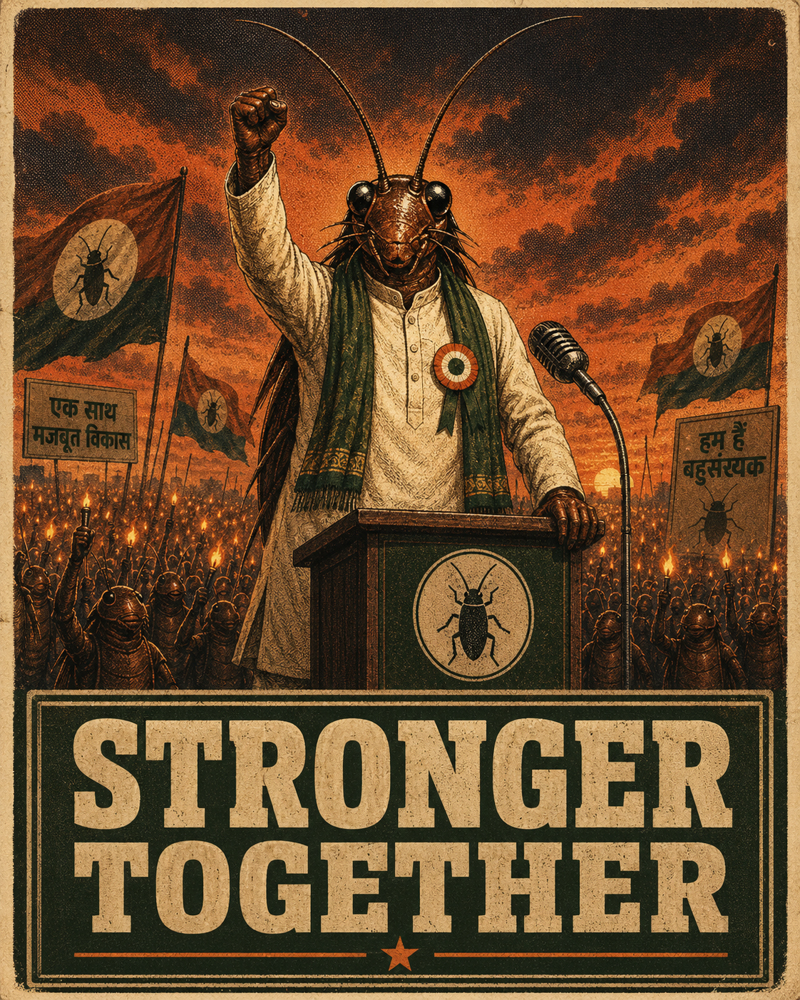
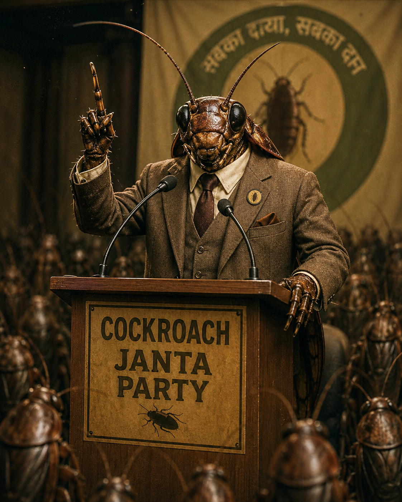

A political party for the people the system forgot to count.
Five demands. Zero sponsors. One large, stubborn swarm.
“ They tried to
step on us.
We came back.

EXPRESS · ISSUE 01There are youngsters like cockroaches, who don't get any employment or have any place in profession. Some of them become media, some of them become social media, RTI activists and other activists and they start attacking everyone.
We accepted the badge. Then we added the antennas.
We are not here to set up another PM CARES, holiday in Davos or rebrand corruption as "strategic spending." We are here to ask — loudly, repeatedly, in writing — where the money went.
Build a party for the young people who keep getting called lazy, chronically online, and — most recently — cockroaches. That's it. That's the mission. The rest is satire.

Read it once. Read it twice. Then send it to someone who needs to read it.
If the CJP comes to power, no Chief Justice shall be granted a Rajya Sabha seat as a post-retirement reward.
Multiple recent CJIs and senior judges have been nominated to the Rajya Sabha or appointed Governors within months of retirement. The optics of a post-retirement reward — handed out by the same executive whose cases the judge ruled on — corrode public trust in judicial independence. A clear bar removes the incentive.
If any legit vote is deleted, whether in a CJP or opposition-ruled state, the CEC shall be arrested under UAPA, as taking away voting rights of citizens is no less than terrorism.
Free and fair elections are foundational. Deliberate deletion of legitimate voters from rolls is a direct attack on democratic participation. Treating it as an administrative error is too lenient — the satire is in the choice of statute; the principle is not.
Women shall receive 50% reservation, not 33%, without increasing the strength of Parliament. Additionally, 50% of all Cabinet positions shall be reserved for women.
The Women's Reservation Act caps women's representation at 33% and was deferred to post-delimitation. Half the population deserves half the seats — and at the Cabinet table where decisions are actually made, not only on the floor where votes are tallied.
All media houses owned by Ambani and Adani shall have their licences cancelled to make way for truly independent media. Bank accounts of Godi media anchors shall be investigated.
Concentration of media ownership across a small number of corporate houses limits press independence and crowds out adversarial reporting. Plurality is structural, not editorial — without ownership reform, neutrality is decorative.
Any MLA or MP who defects from one party to another shall be barred from contesting elections — and from holding any public office — for a period of 20 years.
The Anti-Defection Law (Tenth Schedule) has been routinely circumvented through resignations, group switches, and split-recognition gymnastics. A long, hard bar from public office removes the incentive that the existing law leaves on the table.
We do not check religion, caste, or gender. We do, however, have four (4) standards.
By force, by choice, or by principle. We don't ask.
Physically only. The brain may continue to spiral.
Minimum 11 hours a day, including bathroom breaks.
As long as the content is sharp, honest, and points at something that actually matters.
Membership is free, lifelong, and revocable only by you.
No fees. No selfies with the leader. No "missed call to register."
No corporate spin. No fine print buried in PDFs. The six things people actually ask us.
No. The Cockroach Janta Party is not registered with the Election Commission of India. It is a satirical movement — a community on the internet, not a recognised political body. The demands are stated in earnest. The structure is satire.
Nowhere. We accept no corporate donations, no individual donations, no grants. Operating costs are out-of-pocket. If anyone is soliciting money in our name, they are not us — please report them.
Membership is not public. We do not publish member lists or share data with employers, recruiters, or any third party. The only people who know you joined are us — and you.
Used to confirm your membership and (rarely) to share campaign updates. Not sold. Not shared. Request full deletion any time by emailing contact@cockroachjantaparty.org.
For periodic anti-bot checks and to count the swarm honestly. We will not DM you, post on your behalf, or share your handle with anyone.
Yes — any time. Email us and we will remove you. Membership is revocable only by you. We will not chase, guilt, or "verify" you.
A movement measured in days, not election cycles.
CJI Surya Kant compares unemployed youth to cockroaches during a Supreme Court hearing. The clip goes viral within hours.
Abhijeet Dipke announces the Cockroach Janta Party on X. Four eligibility criteria. One running joke. The handle takes off overnight.
Memes spread to WhatsApp and Telegram groups across colleges. The membership form goes live.
Instagram followers cross one million. #MainBhiCockroach trends nationally on every major platform.
TMC MPs Mahua Moitra and Kirti Azad publicly back the movement. Sign-ups cross one lakh. The CJI issues a press clarification — the remark, he says, was misquoted.
The handle crosses nine million followers and overtakes the BJP on Instagram. Website sign-ups pass 1.6 lakh.
The official X account — at 165,000+ followers — is withheld in India after a legal demand. Instagram passes 13 million; sign-ups cross six lakh.
Instagram reaches 18.7 million followers in seven days — past BJP and Congress on the platform. The swarm is no longer a joke.
Want to join, volunteer, complain, or send a meme? Use the form. We read everything. We reply to most things.
Grab the press kit. Founder bio, key facts, logo files, and a single point of contact — so you can quote us correctly the first time.
The Cockroach Janta Party is a satirical political movement. It is not registered with the Election Commission of India. The demands are stated in earnest; the form of the party is satire.
No corporate donations. No individual donations. No grants. Anyone soliciting payment in our name is not us. Share the site. Talk to your neighbour. Vote.
{kind=link}
{kind=link}